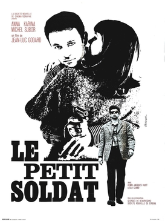

Jean-Luc Godard
1963
88 minutes
TITLE: Le Petit Soldat TEXT PLACEHOLDER 211
This is an early Godard oddity. about a French deserter who gets caught up between sides during the Algerian war. He ends up temporarily working with one of the right-wing French terrorist groups to try to make money to get out of his miserable situation, but ends up digging himself deeper. The plot is complicated and a bit confusing, but he falls in with a woman who turns out to be an Algerian sympathizer, while at the same time the group he's working with is trying to get him to assassinate Algerians and even doing so themselves and using him as a patsy for them. He ends up getting kidnapped and tortured by the Algerians and his girlfriend is murdered and everything eventually skids to kind of a miserable end.
One funny thing that stuck with you from years ago that stuck with you was brought to the forefront of your brain on watching this film. When the baddies decide to frame him for murder, they use his car and tap a sort of shave-and-a-haircut code on his car horn, signifying "Algérie française". From reading Frederick Forsythe's Day of the Jackal years ago, you recall this being a real pattern people would tap out on their car horns to indicate their support for the war and opposition to Algerian independence. You find it remarkable that anything from that book would stick with you this many years later and be useful. You recall having read most of that novel in the same armchair in the public library in your hometown. You did quite a lot of reading in that spot, and it brings back happy memories.
Time to choose something different: